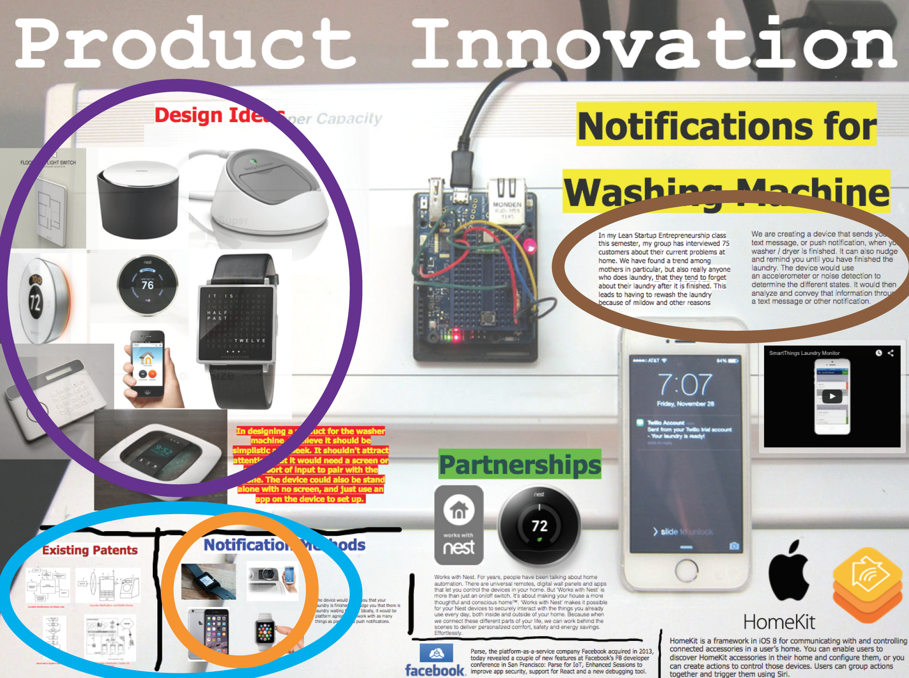
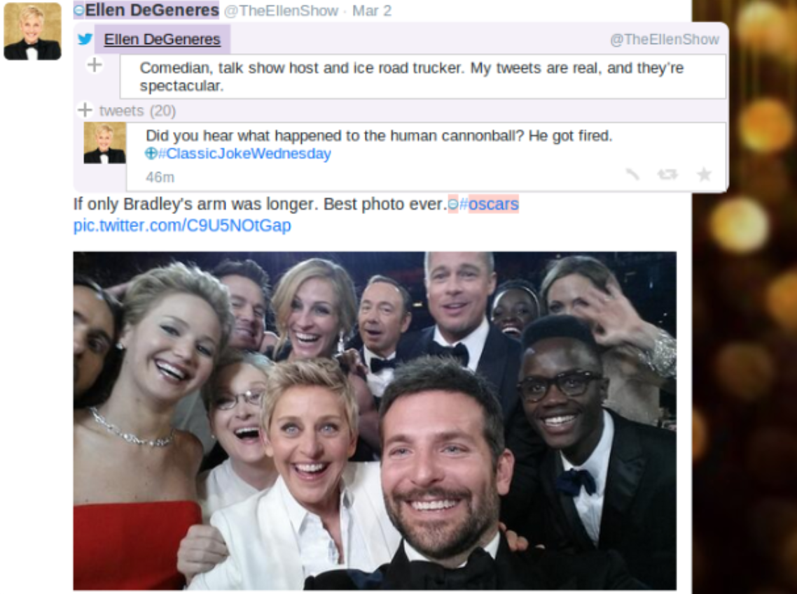
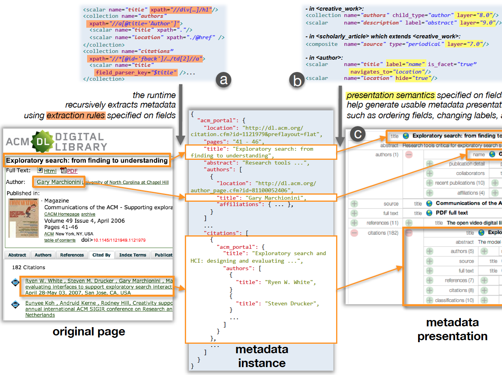
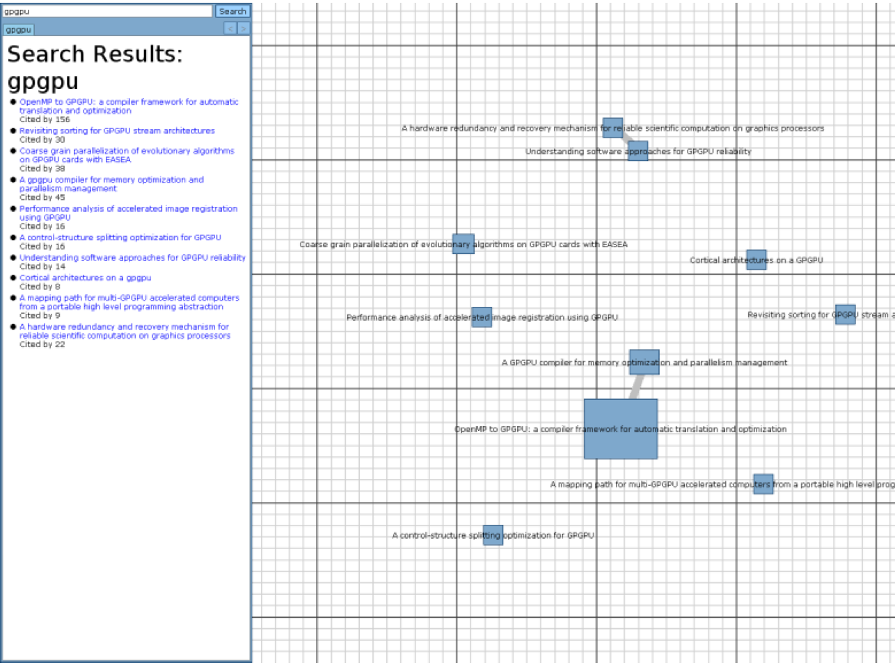
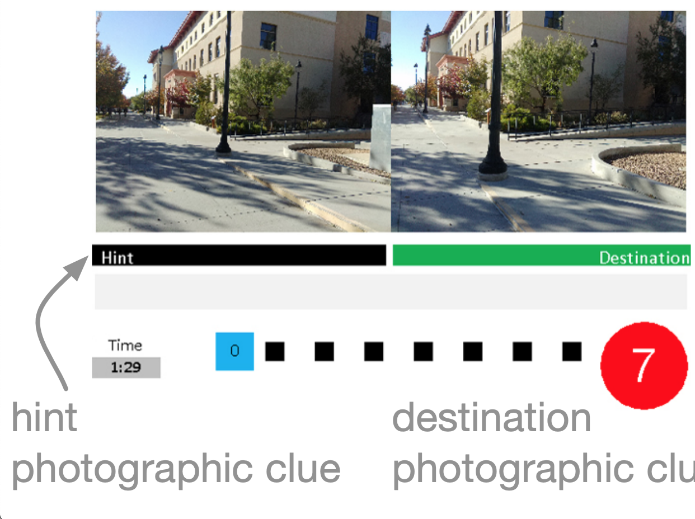
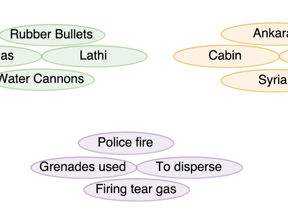

I am a Ph.D. candidate in the Department of Computer Science and Engineering at Texas A&M University, working on computational means of assessing multiscale creative design. I am co-advised by Dr. Andruid Kerne and Dr. Ruihong Huang. My research interests include human-centered AI, explainable AI, information-based ideation, interaction design, and visual design. My research work involves studying, understanding, and advancing creativity support tools, i.e., innovation for innovation. My goal is to make people's engagement with information more interactive, efficient, and meaningful. I am on job market now, for a research position.
Projects

Design Analysis: A Human-Centered AI Investigation to Support Design Education

TweetBubble: In-Context Expansion of Twitter @usernames, #hashtags

BigSemantics: Software Architecture for Meta-Metadata Web Semantics

EvolutionWorks: Interactive Exploration of Research Paper Interconnections

Photo Nav: Pedestrian Navigation Assistance through Photographs

Event Indicators: A Bootstrapping Approach for Event Detection in Social Media
Design Analysis
Multiscale creative web designs organize content across zoom levels, presenting new challenges for web page segmentation, content identification, and creativity evaluation. We propose building novel AI models, combining visual and conceptual features, to quantitatively represent and analyze multiscale designs. Using the models, we will compute analytics that can help design instructors scale assessment and feedback.
We extend the Twitter interface to stimulate exploratory browsing of social media and develop a creative cognition method to establish its efficacy. Exploratory browsing is a creative process in which users seek and traverse diverse and novel information as they investigate a conceptual space. The TweetBubble browser extension extends Twitter to enable expansion of social media associations—@usernames and #hashtags—in-context, without overwriting initial content. We build on a prior metadata type system, developing new presentation semantics, which enable an integrated look and feel consistent with Twitter.
Design of exploratory browsing interfaces must address the limits of display and human working memory. Our approach is based on expandable metadata summaries. Optimizing presentation of metadata summaries for particular types of documents is important as a further means for reducing the cognitive load of rapidly browsing across many documents. To address these issues, we develop a metadata type system as the basis for building exploratory browsing interfaces that maintain context. The type system leverages constructs from object-oriented programming languages. We integrate data models, extraction rules, and presentation semantics in types to operationalize type specific dynamic metadata extraction and rich presentation.
EvolutionWorks supports exploratory browsing of the academic paper citation network with an animated and zoom-able visualization that helps researchers explore the conceptual space that emerges from the relationships between academic papers. Metaphorically speaking, a researcher starts out with the seed of an idea that will grow into an unwieldy set of potentially useful papers that the researcher must prune into a final reading list. Accordingly, EvolutionWorks provides novel affordances to explore the citation network based on this seed-grow-prune model. First, kinetic layering represents abstract document properties as physical properties in a force-directed layout. Second, a unified layout shows the network graph and documents in a single view. Third, the focus-context-focus hop is a way to change focus from paper to paper that keeps researchers aware of the immediate context. Finally, if there is a tight cluster of papers, the system automatically creates cluster summary titles that are easier to read.
We design and study a mixed reality game, PhotoNav, to investigate wearable computing display modalities. We study game play, varying display modality: head-mounted, handheld, and wrist-worn. PhotoNav requires the player to split attention between the physical world and display by using geotagged photographs as clues for navigation. Our results showed that participants using the head-mounted display exhibited poor performance in one of the courses and that players preferred handheld and wrist-worn displays, likely due to their familiarity with them. We derive design implications from the study and discuss problems faced in designing mixed reality games and interfaces that require users to split their attention.
Publication: Sharma, H.N., Toups, Z.O., Dolgov, I., Kerne, A., Jain, A.,
Evaluating Display Modalities Using a Mixed Reality Game,
Proc. ACM SIGCHI Annual Symposium on Computer-Human Interaction in Play (CHI PLAY) 2016, 65-77 [29%].
Event Indicators
Accurate event detection in social media is very challenging because user generated contents are extremely noisy and sparse in content. Event indicators are generally words or phrases that act as a trigger that help us understand the semantics of the context they occur in. We present a weakly supervised approach that relies on using a single strong event indicator phrase as a seed to acquire a variety of additional event cues. We propose to leverage various types of implicit event indicators, such as props, actors and precursor events, to achieve precise event detection. We experimented with civil unrest events and show that the automatically learnt event indicators are effective in identifying specific types of events.